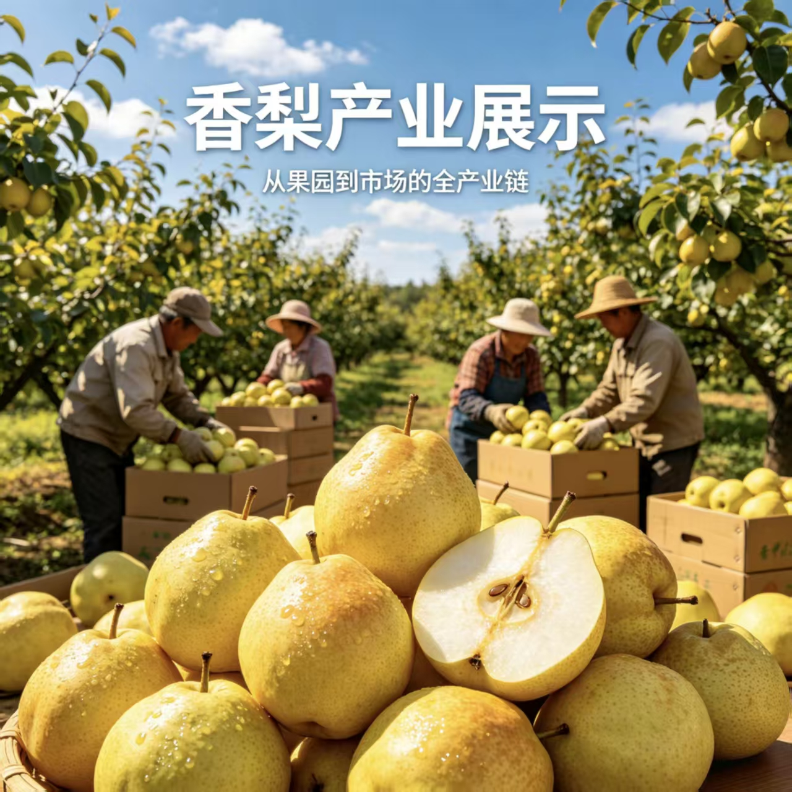

1. 源头把控：生态果园• 环境优越：精选阳光充足、土壤肥沃的生态种植基地，确保香梨在天然环境中生长。
• 科学培育：采用现代化农业技术结合传统经验，从疏花疏果到水肥管理，全程精细化管理，确保每一颗香梨都能吸收充足的养分。
2. 人工采摘：精挑细选
• 适时采收：在香梨达到最佳成熟度时进行采摘，确保口感与甜度达到峰值。
• 人工分拣：果农们亲手将采摘下的香梨进行初步筛选，剔除瑕疵果，保留最完美的果实，确保进入市场的每一箱香梨都品质如一。
3. 精细加工：分级包装
• 严格分级：根据香梨的大小、色泽、糖度进行严格的分级处理，满足不同市场需求。
• 安全包装：采用环保、抗压的包装材料，确保在运输过程中香梨不受损伤，保持新鲜状态。
4. 市场流通：直达消费者
• 冷链运输：从果园到市场，全程冷链保鲜，锁住香梨的鲜甜与水分。
• 多渠道销售：通过线上电商平台、线下商超、社区团购等多种渠道，让新鲜香梨快速送达消费者手中。
核心价值 • 品质保证：从源头到终端，全程可追溯，确保香梨的高品质与安全。
• 自然美味：不打蜡、不催熟，保留香梨最本真的风味与营养。
• 产业带动：通过全产业链模式，带动当地果农增收，助力乡村振兴。
结语 这不仅是一次香梨的丰收，更是一场关于品质与匠心的展示。从果园到市场，每一个环节都凝聚着果农的辛勤与智慧，只为将这份自然的馈赠，以最完美的姿态呈现在您的餐桌上。选择我们的香梨，就是选择健康、美味与放心。